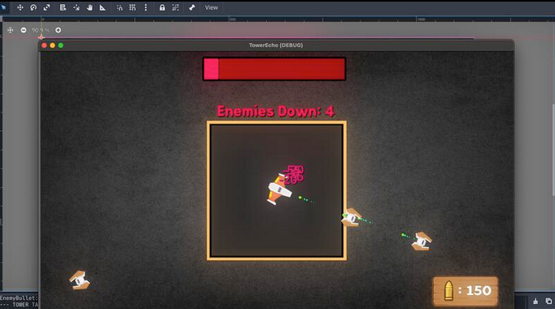
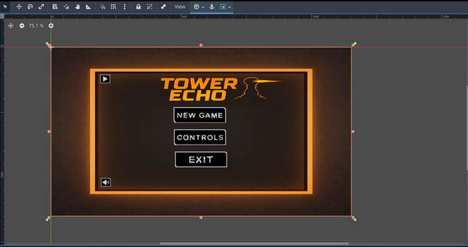
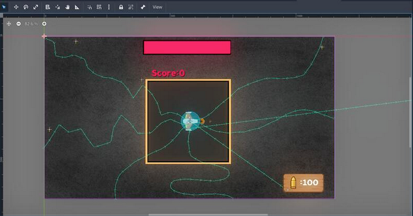

TowerEcho is a complete 2D tower defense game built from scratch in Godot Engine using GDScript. Players defend their base with a mouse-controlled turret against waves of enemies that follow randomized paths through handcrafted levels. The game emphasizes skill-based aiming, resource management, and satisfying combat feedback through polished VFX, SFX, and UI.
Godot Engine - GDScript - May 2025 – Present

| Project Overview | |
|---|---|
| Skills | Godot Engine - GDScript - 2D Game Development - AI Systems - Game Architecture - UI/UX Design - Save Management - VFX & SFX Integration - Object Pooling - State Management |
| Time Period | May 2025 – Present |
| Game Engine | Godot Engine 4 with GDScript for rapid prototyping and gameplay systems. |
| Core Systems |
Combat: Mouse-aimed turret with real-time projectile physics. AI: Enemy pathfinding with unique attack behaviors per wave. Waves: Randomized enemy spawning with escalating difficulty. |
| Persistence | Advanced Save System serializes complete game state including tower, enemies, audio position, and UI state. |
| Polish | 50+ particle systems, screen shake, floating damage text, 12 unique SFX, and synchronized audio-visual feedback for immersive combat. |
Gameplay & Core Loop
The core experience revolves around precision mouse aiming and strategic resource management:
- Mouse-Aimed Turret: Hold to fire continuously toward cursor position. Turret smoothly rotates with instant visual feedback via laser beam traces and muzzle flash.
- Wave Progression: Two distinct levels with 5-8 waves each. Enemy paths randomize at wave start using Godot's Navigation2D system for varied challenge.
- Score-Driven Systems: Kills generate score points. Every 100 points regenerates 10% health and 20 ammo. Score multipliers increase with combo kills.
Tower Defense Systems
Your turret serves as both weapon and fragile base that must survive:
- Health System: 100 base HP with animated progress bar (green → yellow → red). Damage causes screen shake and controller rumble.
- Ammo Management: 150 max ammo with visible counter. Depletes per shot, regenerates via score milestones or pickup pickups.
- Combat Polish:
- Floating damage numbers rise from hit location
- Hit SFX with pitch variation based on damage
- Enemy bullets create sparks on block/miss
- Destruction sequence: explosion particles → screen fade to white → game over

Enemy AI & Combat
Eight enemy types with escalating threat levels create tense decision-making:
- Pathfinding: Enemies spawn at randomized start points and follow curved paths to player base using A* navigation. Reaching goal deducts 25 tower HP.
- Damage States: Multi-hit health bars (50-200 HP). Red flash + vibration animation on damage. Death triggers particle burst and score popup.
- Counter-Attack: 40% of enemies fire homing projectiles at turret. Key Innovation: Enemy bullets collide with player bullets mid-air, creating risk/reward shooting lanes.
- Boss Wave: Final wave features tanky enemy with shield phase, requiring focus fire to break before damage phase.

Menus & User Experience
Intuitive interfaces minimize friction:
Main Menu Features
Main Menu Options
NEW GAME - Start fresh session
CONTROLS - Interactive demo of mouse aiming
RESUME - Load last save (if exists)
EXIT - Quit to desktop
🔊 Sound Toggle - Animated icon reflects mute stateIn-Game HUD (Top-Right)
HUD Display
❤️ Health: [Animated Progress Bar] 75/100
💰 Score: 1,247 [x1.5 Combo Multiplier]
🔫 Ammo: 142/150
👹 Enemies Down: 24- ScreenFader: Global singleton handles all scene transitions with configurable fade time
- Pause Menu: ESC saves complete game state and returns to menu
Advanced Save System
Production-ready persistence without external databases:
Saved State Structure
Saved State Includes:
├─ Tower: health, position, rotation
├─ Player: score, ammo, combo multiplier
├─ Enemies: position, health, path progress
├─ Audio: Background music position (ms)
├─ Wave: current wave, enemies remaining
└─ UI: HUD values, pause stateResume Behavior: Restores exactly where paused, including mid-explosion VFX and bullet trajectories. Auto-clears save file on victory/defeat.
Audio-Visual Excellence
Sound Design (12 unique SFX)
- Muzzle flash: Sharp pew-pew with distance falloff
- Enemy hit: Meaty thwack, pitch-scaled by damage
- Bullet collision: High-pitched ting!
- Tower damage: Rising alarm pitch
- Victory: Triumphant fanfare + particle cascade
Visual Polish
- 50+ particle systems (muzzle flash, explosions, sparks)
- Tween-based animations (UI scale/pop, damage numbers)
- Camera shake with configurable intensity/duration
- Color grading shifts during low health
Technical Implementation
Core Systems Architecture
Core Systems:
├─ Singleton Managers: GameState, AudioManager, ScreenFader
├─ Scene Architecture: Modular (Enemy.tscn, Bullet.tscn, Tower.tscn)
├─ Performance: Object pooling for bullets/particles (2000+ on screen)
└─ Input: Unified Desktop/Mobile mouse + gamepad supportSkills Demonstrated: Godot Engine, GDScript, Game Design, Audio Implementation, Particle Systems, UI/UX, State Management, Object Pooling
Code Examples
Enemy AI Pathfinding
# Enemy pathfinding and movement in GDScript
func _ready():
path = get_path_to_target()
path_index = 0
func _physics_process(delta):
if path_index < path.size():
var target = path[path_index]
var direction = (target - global_position).normalized()
velocity = direction * speed
move_and_slide()
if global_position.distance_to(target) < 5:
path_index += 1
else:
attack_base()Wave Management System
# Wave spawning and difficulty scaling
func spawn_wave(wave_number: int):
var enemy_count = base_enemies + (wave_number * 2)
var spawn_delay = max(0.5, 2.0 - (wave_number * 0.1))
for i in range(enemy_count):
var enemy_type = get_random_enemy_type()
var spawn_point = get_random_spawn_point()
spawn_enemy(enemy_type, spawn_point)
await get_tree().create_timer(spawn_delay).timeoutSave System
# Save game state to file
func save_game():
var save_data = {
"tower_health": tower_health,
"tower_position": tower_position,
"tower_rotation": tower_rotation,
"score": current_score,
"ammo": current_ammo,
"combo_multiplier": combo_multiplier,
"wave_number": current_wave,
"enemy_positions": get_all_enemy_positions(),
"enemy_health": get_all_enemy_health(),
"audio_position": get_audio_position(),
"ui_state": get_ui_state()
}
var file = FileAccess.open("user://savegame.dat", FileAccess.WRITE)
file.store_string(JSON.stringify(save_data))
file.close()